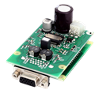

Documentation for libximc library.


Libximc is thread safe, cross-platform library for working with 8SMC4-USB and 8SMC5-USB controllers.
Full documentation about controllers is there
Full documentation about libximc API is available on the page ximc.h.
What the controller does.
- Supports input and output synchronization signals to ensure the joint operation of multiple devices within a complex system ;.
- Works with all compact stepper motors with a winding current of up to 3 A, without feedback, as well as with stepper motors equipped with an encoder in the feedback circuit, including a linear encoder on the positioner.
- Manages hardware using ready-made software or using libraries for programming languages: C / C ++, C #, JAVA, Visual Basic, Python 2/3, .NET, Delphi, integration with MS Visual Studio programming environments, gcc, Xcode.
- Works with scientific development environments by integrating LabVIEW and MATLAB;
What can do libximc library
- Libximc manages hardware using interfaces: USB 2.0., RS232 and Ethernet, also uses a common and proven virtual serial port interface, so you can work with motor control modules through this library under almost all operating systems, including Windows, Linux and Mac OS X
- Libximc library supports plug/unplug on the fly. Each device can be controlled only by one program at once. Multiple processes (programs) that control one device simultaneously are not allowed.
- Warning
- Libximc library opens the controller in exclusive access mode. Any controller opened with libximc (XiLab also uses this library) needs to be closed before it may be used by another process. So at first check that you have closed XiLab or other software dealing with the controller before trying to reopen the controller.
Please read the Introduction to start work with library.
To use libximc in your project please consult with How to use with...
Assistance.
Many thanks to everyone who sends suggestions, errors and ideas. We appreciate your suggestions and try to make our product better. Please post your questions here. Your ideas and comments send a e-mail: 8smc4@standa.lt